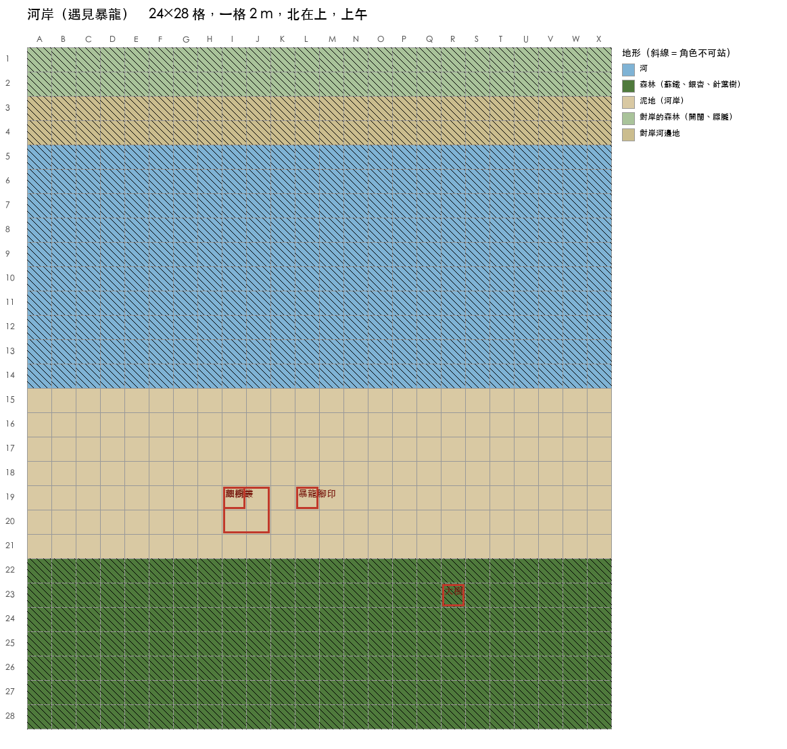

EP1-new 拍攝清單
第 10 步（拍攝清單＋旁白，定稿點）、第 11 步（分幕）、第 12 步（場景地圖）的檢查點。來源：episodes/001_trex_run_new/script_new_v1.md、episodes/001_trex_run_new/scenes_new_v1.json。綠底＝科普格、黃底＝搞笑格。地圖是 Claude 初稿，你可以用地圖編輯器改。畫面上都不能有字（Flow 規定）。
總覽
68 格・4 幕
地圖總覽（第 12 步）
這一集用到的地圖。ep2_ 開頭的是 EP2 新畫的（Claude 初稿，你可以改）；其他沿用 EP1。

幕 16 地獄溪・河岸・上午（鏡頭拉高＋今昔對照）
拍完鴨嘴龍，劇情暫停：鏡頭從河邊的 HERO 一路拉高到整片北美洲，介紹地獄溪的地點、地形、海、氣候、植物、動物，再跳到今天的荒地和 1902 年挖到暴龍，最後鏡頭降回 HERO 身邊。
地圖：river（沿用 EP1 幕 7 的河岸地圖；空拍、插圖格不用地圖）
| 格 | 畫面 | 類型 | 景別 | 旁白 | 聲音 | 分類 | 知識點 | 看得到的細節 |
|---|---|---|---|---|---|---|---|---|
| S11-1 | 河邊：HERO 剛拍完對岸的鴨嘴龍，放下相機，四處張望 | 🖼 | 中景 | 先停一下。你知道你現在在哪裡嗎？ | 河水聲、遠處鴨嘴龍低鳴 | 劇情 | HERO 戴帽子、滿身泥、胸前掛相機、背背包；背後是河和對岸喝水的鴨嘴龍 | |
| S11-2 | 鏡頭往上拉：從空中往下看，HERO 是河邊平原上的一個小點 | 🖼 | 大遠景・空拍 | 這裡叫做地獄溪，在今天美國蒙大拿州的東邊。 只不過，你早到了六千六百萬年。 | 風聲 | 科普 | #101 | 彎彎的河、兩岸平原和森林；HERO 很小 |
| S11-3 | 河岸被河水沖開的斷面：泥土一層一層，最上面一條薄薄的深色層 | ✏️ | 特寫 | 這裡的泥土，是一層一層慢慢堆起來的。最上面那薄薄的一層，就是將來小行星撞地球那一刻留下來的。 | — | 科普 | #102 | 斷面上很多層顏色不同的土；最上面那一層特別薄、顏色比較深；沒有字 |
| S11-4 | 鏡頭再拉高：整片河流氾濫平原，河從西邊的山流下來，往東流向遠方的海 | 🖼 | 大遠景・空拍 | 我們把鏡頭拉高一點。 你腳下是一大片平平的河邊平原，河水從西邊的山上流下來，一路往東流進海裡。 | 風聲 | 科普 | #103 | 西邊（畫面左）是山，東邊（畫面右）遠處是海；河在平原上彎來彎去 |
| S11-5 | 西邊的洛磯山：還很年輕、不高，正在隆起 | 🖼 | 遠景 | 西邊那排山，就是洛磯山。不過它現在還很年輕，才剛開始慢慢長高。 | 低沉的地鳴 | 科普 | #6、#103 | 山不高、山頂沒有雪；山腳是森林 |
| S11-6 | 從很高的空中看整片北美洲：中間一道從南邊伸上來的淺海灣，HERO 所在的位置有一個小亮點 | 🖼 | 大遠景・空拍 | 再往東看。原本有一片大海，把北美洲切成東西兩半。現在它已經退得差不多了，只剩一道淺淺的海灣，從南邊伸上來。 | — | 科普 | #104 | 大陸形狀照 6600 萬年前的古地圖（REF_NA66）；只剩南邊伸進來的細長淺海灣；沒有字 |
| S11-7 | 回到地面：潮濕的森林裡起了一點霧，HERO 擦汗 | 🖼 | 中景 | 天氣呢？這裡溫暖又潮濕，一年平均大約十一、二度，比現在的蒙大拿暖和一些。 就算是最冷的月份，也只有兩、三度，冬天不會整個凍起來。 | 蟲鳴、滴水聲 | 科普 | #5、#105 | 空氣濕濕的、有薄霧；HERO 滿身泥、滿頭汗 |
| S11-8 | 同一片森林下起小雨，HERO 抬頭看天 | 🖼 | 中景 | 一年裡有比較濕的時候，也有比較乾的時候，但不會乾到變成旱季。 | 小雨聲 | 科普 | #106 | 細雨；葉子濕亮；地上有小水窪 |
| S11-9 | 從太空看地球：南極、北極都沒有白色的冰原 | ✏️ | 大遠景 | 其實整個地球都比現在熱，南極、北極連一片大冰原都沒有。 | — | 科普 | #107 | 地球兩極是綠色和藍色的，沒有白色冰帽；沒有字 |
| S11-10 | 森林植物一路看過去：棕櫚、開花的木蘭、闊葉大樹，地上是蕨類，河邊有水杉，也有蘇鐵和銀杏 | 🖼 | 中景 | 森林裡大部分是開花的植物，棕櫚、木蘭、闊葉的大樹；地上長滿蕨類，河邊還有水杉，也看得到蘇鐵和銀杏。 | 鳥叫 | 科普 | #10、#108 | 開花植物最多；林下蕨類；河邊水杉；蘇鐵、銀杏；沒有草原 |
| S11-11 | HERO 站在幾棵中小型的樹旁邊，樹只比他高幾倍 | 🖼 | 全景 | 這些樹大多不算太高，是中小型的樹。 | 鳥叫 | 科普 | #109 | 樹不算太高，是中小型的樹 |
| S11-12 | 河裡和岸邊的動物：鱷魚、烏龜、魚，草叢裡的蜥蜴和蛇，樹上的鳥，地上鑽來鑽去的小哺乳動物 | 🖼 | 遠景 | 住在這裡的也不只恐龍。河裡有鱷魚、烏龜和魚，草叢裡有蜥蜴和蛇，樹上有鳥，地上還有小小的哺乳動物在鑽來鑽去。 | 水聲、鳥叫 | 科普 | #110 | 每種動物都小小的、自然的大地色；沒有恐龍 |
| S11-13 | 六千六百萬年後的同一個地方：乾巴巴的荒地，一層一層的土坡被風雨沖開，土裡露出一截骨頭 | 🖼 | 大遠景 | （停） 六千六百萬年以後，這裡變成一片乾巴巴的荒地。 風和雨把一層一層的泥土沖開，埋在裡面的骨頭就露了出來。 | 乾燥的風聲 | 科普 | #112 | 今天的荒地（badlands）：光禿禿、條紋狀的土坡，幾乎沒有樹；沒有人造的東西 |
| S11-14 | 一九〇二年：戴寬邊帽的化石獵人在荒地土坡上，用鏟子和刷子挖出暴龍的骨頭 | ✏️ | 全景 | 一九〇二年，人類挖到的第一具暴龍骨頭，就是在這裡。 | 鏟子聲 | 科普 | #112 | 化石獵人畫成跟 HERO 同一種畫風的火柴人路人，純白皮膚，不是 HERO；暴龍骨頭露出半截 |
| S11-15 | 鏡頭降回河邊的 HERO，他低頭看自己的鞋子旁邊 | 🖼 | 中景 | 所以，你現在站的地方……（停）就是暴龍的老家。 | 河水聲 | 劇情 | 跟 S11-1 同一個地方；HERO 低頭看鞋旁的泥地（接下一段的腳印） |
幕 17 河岸蕨類叢・上午（定格講解：暴龍的眼睛和鼻子）
HERO 剛逃走，劇情回到他躲在蕨類裡、屁股露在外面的那一刻定格，講解為什麼「躲起來、不動」都沒用：暴龍的眼睛、鼻子，以及科學家怎麼知道。
地圖：river（沿用 EP1 幕 7 的河岸地圖（HERO 躲蕨類那一刻）；插圖格不用地圖）
| 格 | 畫面 | 類型 | 景別 | 旁白 | 聲音 | 分類 | 知識點 | 看得到的細節 |
|---|---|---|---|---|---|---|---|---|
| S12-1 | 定格變灰：HERO 把頭埋進蕨類、屁股露在外面，暴龍的鼻子湊到他屁股旁邊 | 🖼 | 中景・定格 | 等一下，先暫停。剛剛那兩招，為什麼一點用都沒有？ | 唱片刮擦，然後全靜 | 劇情 | 畫面變灰；HERO 戴帽子、滿身泥；暴龍只露頭和鼻子 | |
| S12-2 | HERO 僵著不動站在原地，暴龍歪著頭盯著他看 | 🖼 | 全景 | 「你不動，暴龍就看不到你」，這句話是從電影《侏羅紀公園》來的。科學上，沒有任何根據。 | — | 科普 | #115 | HERO 全身僵直；暴龍的頭在畫面上方，眼睛直盯著 HERO |
| S12-3 | 暴龍的頭正面特寫：兩隻眼睛都朝前 | 🔍 | 特寫 | 暴龍的兩隻眼睛都朝向前面，兩邊看到的範圍，重疊了大約五十五度，比老鷹還要寬。 所以牠很會判斷，你離牠有多遠。 | 低沉的呼吸聲 | 科普 | #113 | 兩眼朝前，像在瞄準；頭的兩側也看得到 |
| S12-4 | 暴龍眼中看到的畫面：蕨類叢裡露出的 HERO 屁股和兩條腿，清清楚楚 | 🖼 | 中景・主觀鏡頭 | 牠的視力，最好的時候，可能是人的十三倍。 | — | 科普 | #114 | 從暴龍的高度往下看；每片蕨葉都很清楚，HERO 的屁股很顯眼 |
| S12-5 | 暴龍的鼻孔特寫，用力吸氣 | 🔍 | 大特寫 | 鼻子就更厲害了。牠腦袋裡負責聞味道的部分又大又發達，是恐龍裡鼻子最靈的那一群。 | 深深的吸氣聲 | 科普 | #116 | 鼻孔張大；附近的蕨葉被吸得往鼻孔方向飄 |
| S12-6 | 暴龍和一隻小狗並排，一起低頭聞地上 | ✏️ | 全景 | 那牠的鼻子，有沒有比狗還靈呢？ 這個嘛，科學家也說不準。光算鼻子裡的「氣味開關」，狗說不定還多一點。 | 嗅嗅聲 | 科普 | #117 | 狗很小、在暴龍腳邊；兩個都在聞同一個地方；搞笑 |
| S12-7 | 科學家把暴龍頭骨推進斷層掃描機，螢幕上出現頭骨裡面的形狀 | ✏️ | 中景 | 那科學家是怎麼知道的？ 他們把暴龍的頭骨拿去做斷層掃描，看腦袋裡面留下來的形狀，就能推出牠的眼睛和鼻子有多好。 | 機器嗡嗡聲 | 科普 | #118 | 科學家畫成火柴人路人、穿白袍、純白皮膚，不是 HERO；螢幕上只有形狀、沒有字 |
| S12-8 | 解除定格、恢復顏色：回到蕨類旁，暴龍的鼻子正對著 HERO 的屁股 | 🖼 | 中景 | 所以你剛剛那一招……（停）牠看得一清二楚，也聞得一清二楚。 | 暴龍噴氣聲 | 劇情 | 跟 S12-1 同一個構圖，恢復彩色 |
幕 18 森林小路・倒木・中午（暫停講解：為什麼大恐龍跑不快）
HERO 站在倒木上跟喘氣的暴龍揮手，劇情停下來完整講解：礦井和平方立方定律、肌肉骨頭撐不住、加速的燃料、體型和速度的駝峰形、科學家怎麼算暴龍速度、學界還在吵。最後回到倒木。
地圖：沿用 EP1 幕 8 的森林小路地圖（倒木）；講解格是手繪插圖，不用地圖
| 格 | 畫面 | 類型 | 景別 | 旁白 | 聲音 | 分類 | 知識點 | 看得到的細節 |
|---|---|---|---|---|---|---|---|---|
| S13-1 | 定格變灰：HERO 站在倒木上揮手，暴龍喘著氣 | 🖼 | 遠景・定格 | 好，現在來回答這一集最重要的問題：牠為什麼追不上你？ | 唱片刮擦 | 劇情 | 跟成品「站上倒木揮手」同一刻；HERO 戴帽子、滿身泥 | |
| S13-2 | 一口很深的礦井：從井口往下看，黑漆漆看不到底 | ✏️ | 全景 | 答案，要從一口很深很深的礦井說起。 | 回音 | 科普 | 木頭井架、繩子；井很深 | |
| S13-3 | 一九二六年：一位留鬍子的生物學家在書桌前寫文章 | ✏️ | 中景 | 一九二六年，英國的生物學家霍爾丹寫了一篇文章，叫做〈剛剛好的大小〉。 | 鋼筆沙沙聲 | 科普 | #16 | 火柴人路人、純白皮膚，不是 HERO；紙上沒有字 |
| S13-4 | 老鼠掉到井底，拍拍身上的灰，跑走 | ✏️ | 全景 | 他說：把一隻老鼠丟進一口深到不行的礦井，牠落地以後，拍拍身上的灰，照樣跑掉。 | 小小的「啪」 | 科普 | #13 | 井底剖面；老鼠完好無傷 |
| S13-5 | 大一點的老鼠、人、馬掉下去：只畫成落地時一團「噗」的灰塵雲 | ✏️ | 全景 | 換成大一點的老鼠，會摔死；人會摔碎；馬呢，會整隻濺開。 | 「噗」 | 科普 | #14、#15 | 不畫血、不畫受傷的樣子；用灰塵雲表示 |
| S13-6 | 兩樣東西一起往下掉：輕飄飄、攤開的老鼠被空氣托著慢慢落；又小又重的石塊直直往下衝 | ✏️ | 全景 | 為什麼？掉下來的時候，空氣擋住你的力量，要看你的表面有多大；撞到地上的力道，要看你有多重。 | 風聲 | 科普 | #19 | 空氣畫成往上的小線條；沒有字 |
| S13-7 | 積木：一個小方塊，旁邊是兩倍高的大方塊，大方塊由八個小方塊疊成 | ✏️ | 全景 | 問題就出在這裡：一個東西放大成兩倍高，表面積只變成四倍，體積和重量卻變成八倍。 | 積木喀喀聲 | 科普 | #18 | 實物積木；大方塊的一面看得出是四個小方塊；沒有字、沒有數字 |
| S13-8 | 九噸的暴龍像石頭一樣掉進礦井 | ✏️ | 全景 | 所以，越大的動物，掉下來越停不住。如果一隻九噸重的暴龍掉進礦井，牠會像石頭一樣往下衝，重重砸在井底。 | 呼嘯聲 | 科普 | #17 | 暴龍縮成一團、直直往下衝；搞笑不血腥 |
| S13-9 | 暴龍的腿骨：骨頭的粗細，和上面壓著的大身體 | ✏️ | 中景 | 跑步，也是同一個道理。 骨頭撐得住多少力氣，看的是它有多粗，只會變成四倍；要撐的重量，卻變成八倍。 | 骨頭喀喀聲 | 科普 | #27 | 腿骨像柱子，上面壓著很重的身體 |
| S13-10 | 老鼠的細腿和大象的粗腿並排 | ✏️ | 全景 | 所以動物越大，要站、要走、要跑，就需要越多的腿肌和腿骨。大到某個程度，跑步在物理上就不可能了。 | — | 科普 | #28、#29 | 大象的腿相對粗很多；比例誇張好懂 |
| S13-11 | 暴龍大腿的肌肉：又大又壯 | ✏️ | 中景 | 暴龍腿上的肌肉，比例幾乎比歷史上任何動物都高。 | — | 科普 | #23 | 手繪的大腿肌肉，像橡皮筋一樣一條一條 |
| S13-12 | 暴龍想用力跑，腿骨出現裂痕 | ✏️ | 中景 | 可是再壯也沒用，只要力氣超過快走，牠的腿骨就會碎掉。 | 「喀啦」 | 科普 | #30 | 裂痕在骨頭上；暴龍一臉痛苦，搞笑不血腥 |
| S13-13 | 一隻獵豹蹲低、準備衝出去 | ✏️ | 全景 | （停） 那速度是怎麼來的？要看兩件事：肌肉有多大力氣，還有能多快加速。 | — | 科普 | #39、#40 | 肌肉繃緊；尾巴翹起 |
| S13-14 | 肌肉裡有一小罐汽油，一點火就燒完了 | ✏️ | 特寫 | 加速，靠的是一種叫做 ATP 的快速燃料，就像一小罐汽油，很有力，但一下子就燒完了。 | 「呼」一聲火燒完 | 科普 | #41 | 小油罐、小火苗；沒有字 |
| S13-15 | 大象慢慢吃一點點草；老鼠拚命狂吃 | ✏️ | 全景 | 大動物的身體很省油，以每一公斤來算，大象燒的能量比老鼠少得多。 | 咀嚼聲 | 科普 | #42 | 大象悠閒；老鼠嘴巴塞滿 |
| S13-16 | HERO 面前堆著一大座食物山 | ✏️ | 全景 | 如果你的身體像老鼠一樣耗油，你一天得吃掉十一公斤的食物。 | HERO〔欸？〕 | 科普 | #43 | HERO 一臉驚恐；食物山比他還高 |
| S13-17 | 大象身體裡那罐加速用的汽油，比例上小小一罐 | ✏️ | 全景 | 可是省油的代價，就是用來加速的燃料，比例上比較少。 | — | 科普 | #81 | 大象很大、油罐很小；沒有字 |
| S13-18 | 一位科學家把老鼠、獵豹、大象一隻一隻放上體重秤 | ✏️ | 全景 | 二〇一七年，德國的科學家希爾特，只用動物的體重，就算出了牠們能跑多快。 | 秤的叮噹聲 | 科普 | #80 | 火柴人路人科學家、純白皮膚；秤上沒有數字 |
| S13-19 | 同一條跑道上賽跑：老鼠、獵豹、大象，獵豹遙遙領先 | ✏️ | 遠景 | 結果是：最小的跑不快，最大的也跑不快，跑最快的，是不大不小、剛剛好的。 | 賽跑的槍聲 | 科普 | #44 | 獵豹最前面；老鼠和大象都落後 |
| S13-20 | HERO 輕鬆跑著，後面一隻很大的恐龍追不上 | ✏️ | 遠景 | 超過大約兩千七百公斤的恐龍，年輕、體能好的人，大概都跑得掉。 | HERO 喘氣 | 科普 | #44 | 恐龍很大、腳步很重 |
| S13-21 | 一個人和一隻獵豹並排站著，差不多一樣重 | ✏️ | 全景 | 當然，身材也有關係。同樣的體重，人跟獵豹，跑起來就差得遠了。 | — | 科普 | #45 | 人畫成火柴人路人；兩個體型不同 |
| S13-22 | 雪貂和犀牛並排在跑，跑步的姿勢一模一樣 | ✏️ | 全景 | （停） 那科學家，又是怎麼算出暴龍有多快的？ 一九七〇年代，英國的動物學家亞歷山大發現：不管是雪貂還是犀牛，動物跑起來，都遵守同一套規律。 | 噠噠的腳步聲 | 科普 | #46 | 兩隻的腿擺動角度一樣 |
| S13-23 | 恐龍的腿旁邊掛著一個鐘擺，腳底下是一排腳印 | ✏️ | 全景 | 所以只要量出恐龍的屁股有多高、一步跨多遠，就能估出牠的速度，就像看鐘擺有多長，就知道它擺得多快。 不過這只是很粗略的算法，誤差可能很大。 | 鐘擺滴答聲 | 科普 | #47、#48 | 髖部高度和步伐長度用線標出來，沒有字 |
| S13-24 | 一隻大型肉食恐龍和一個人賽跑，恐龍只快一點點 | ✏️ | 全景 | 用這種方法算，大型的肉食恐龍，大概跑得比人快一點。 | 腳步聲 | 科普 | #49 | 差距很小 |
| S13-25 | 一張長桌上擺著七十幾個小恐龍模型，科學家在旁邊比對化石 | ✏️ | 全景 | 二〇二〇年，又有一組科學家，把好幾套算法湊在一起，加上新挖到的化石，一口氣估算了七十幾種恐龍。 | 翻紙聲 | 科普 | #50 | 很多小模型排成一排；科學家是火柴人路人 |
| S13-26 | 一位科學家指著暴龍模型搖頭；旁邊暴龍慢吞吞地小跑一段 | ✏️ | 全景 | 二〇〇二年，科學家哈欽森在一篇論文裡直接說：暴龍不是快跑者。 牠頂多只能慢跑一小段，而且起步很慢。 | — | 科普 | #25、#26 | 科學家是火柴人路人；暴龍跑得很吃力 |
| S13-27 | 暴龍和一個拚命衝刺的普通人並排，速度差不多 | ✏️ | 全景 | 另一位科學家史尼夫利算過，成年暴龍的時速，不會超過二十公里。 差不多就跟一個普通人拚命衝刺一樣快。 | 喘氣聲 | 科普 | #31、#32 | 兩個並排、誰也沒領先 |
| S13-28 | 電腦螢幕上的暴龍骨架在快走；一換成跑步，腿骨就變紅、裂開 | ✏️ | 中景 | 二〇一七年，還有科學家用電腦，把暴龍的骨頭和肌肉整個模擬出來。結果是：牠只能快走，真的跑起來，腿骨會撐不住。 | 電腦嗶嗶聲 | 科普 | #119 | 螢幕上沒有字 |
| S13-29 | 兩位科學家吵架，一位旁邊停著一台腳踏車 | ✏️ | 全景 | 不過，這件事到現在還在吵。也有人算出，暴龍說不定能跑到時速三十幾公里，跟腳踏車差不多。 | 吵雜聲 | 科普 | #120 | 兩位都是火柴人路人；搞笑 |
| S13-30 | HERO 一邊跑一邊急轉，把暴龍甩在後面 | ✏️ | 遠景 | 不管是哪一個答案，有一件事是確定的：暴龍加速慢，轉彎更慢。腳程不錯的人，很有機會邊跑邊轉彎，把牠甩在後面。 | 急煞聲 | 科普 | #33 | 暴龍轉不過來、衝過頭 |
| S13-31 | 一群長腿恐龍排成一列，慢慢走過遠方的平原 | ✏️ | 大遠景 | 只不過，有些恐龍的長腿，是為了走遠路也不會累。 | — | 科普 | #71 | 長途行走、不慌不忙 |
| S13-32 | 解除定格、恢復顏色：倒木上的 HERO，下面的暴龍喘著氣看他 | 🖼 | 遠景 | （停） 所以剛剛那隻……不是不想追你，是追不動。 | 暴龍喘氣聲 | 劇情 | 跟 S13-1 同一個構圖，恢復彩色 |
幕 19 森林空地・傍晚（定格講解：急轉彎）
青少年暴龍衝出來、HERO 轉身要跑的那一刻定格：生存指南又留在實驗室，旁白講獵豹、獅子的研究和被追時的兩招急轉戰術，最後解除定格。
地圖：沿用 EP1 幕 10 的森林空地地圖（青少年暴龍衝出來那一刻）；講解格是手繪插圖，不用地圖
| 格 | 畫面 | 類型 | 景別 | 旁白 | 聲音 | 分類 | 知識點 | 看得到的細節 |
|---|---|---|---|---|---|---|---|---|
| S14-1 | 定格變灰：HERO 轉身要跑，青少年暴龍從黑影裡衝出來 | 🖼 | 全景・定格 | 定格。 | 唱片刮擦，然後全靜 | 劇情 | HERO 沒戴帽子（剛被似鴕龍叼走）、滿身泥、胸前掛相機、背背包；青少年暴龍黃眼睛 | |
| S14-2 | 實驗室桌上：生存指南和水壺孤零零地放著 | 🔍 | 特寫 | 這時候，你應該翻開生存指南。（停）可惜，它又留在實驗室了。 那我們只好自己來。 | 時鐘滴答聲 | 搞笑 | 博士實驗室的桌上；生存指南封面沒有字 | |
| S14-3 | 一位科學家在獵豹的脖子上戴上感應項圈 | ✏️ | 中景 | 有一位研究動物怎麼跑的科學家，叫做威爾森。他在獵豹、獅子還有牠們的獵物身上裝上感應器，量出牠們到底跑多快、怎麼轉彎。 | — | 科普 | #53 | 科學家是火柴人路人；獵豹乖乖坐著 |
| S14-4 | 草原上，獵豹追黑斑羚、獅子追斑馬 | ✏️ | 遠景 | 獵豹跑起來，比黑斑羚快很多；獅子也比斑馬快一些。 | 奔跑聲 | 科普 | #54、#55 | 兩組追逐在同一片草原 |
| S14-5 | 三隻黑斑羚：兩隻逃走、一隻被抓（只畫獵豹撲上去，不畫血） | ✏️ | 全景 | 可是黑斑羚和斑馬，每三次被追，有兩次都逃掉了。 | — | 科普 | #56 | 三個小畫面排成一排，沒有字 |
| S14-6 | 黑斑羚不慌不忙地跑，回頭看追來的獵豹 | ✏️ | 全景 | 牠們靠的不是速度。黑斑羚明明可以跑得超級快，被追的時候反而不跑到最快。 | — | 科普 | #66 | 黑斑羚還留著力氣 |
| S14-7 | 最後一刻，黑斑羚猛地急轉彎；獵豹衝過頭、轉不過來 | ✏️ | 全景 | 牠們等到最後一刻，猛地一轉彎。追太快的那一個，來不及跟著轉，只能眼睜睜看牠溜走。 所以要抓到你，光跑得快還不夠，還得轉得比你靈活。 這些是在草原上研究獅子和獵豹得到的，不過放到恐龍身上，道理也是一樣。 | 急煞聲 | 科普 | #57、#58 | 獵豹往前滑出去，揚起塵土 |
| S14-8 | HERO 做假動作：身體往左、腳往右 | ✏️ | 全景 | 面對跑得比你快的對手，別想用直線拚贏。要用頭腦和假動作，讓牠猜不到你下一步往哪跑。 | — | 科普 | #65 | HERO 表情認真；搞笑 |
| S14-9 | 第一招：暴龍還在遠處，HERO 左彎右拐但不減速 | ✏️ | 遠景 | 第一招：牠還遠遠的時候，你就一直左彎右拐，但不要停、不要變慢，先把距離拉開。 | 腳步聲 | 科普 | #68 | 地上畫出 HERO 彎彎曲曲的腳印 |
| S14-10 | 第二招：暴龍只剩兩三步，HERO 急煞、急轉、衝出去；暴龍繞了一個大圈 | ✏️ | 全景 | 第二招：等牠快追到你，只剩兩、三步的時候，猛地煞車，來一個急轉彎，再衝出去。 牠跑太快，煞不住，只能繞一個大圈，一下子就被你甩開一兩步。 | 急煞聲、暴龍滑步聲 | 科普 | #69 | 暴龍的路線是一個大弧線 |
| S14-11 | HERO 拿碼表、跨一大步 | ✏️ | 全景 | 對了，科學家量速度的時候，常用「每秒幾公尺」。每秒一公尺，差不多是時速三點六公里。 | 碼表嗶一聲 | 科普 | #59 | 碼表上沒有數字 |
| S14-12 | 腦洞：HERO 鑽進一個小洞，暴龍的頭塞不進來；旁邊是一個蓋著樹枝的陷阱坑 | ✏️ | 全景 | 如果這兩招都不管用呢？寫這本書的作者還有一些腦洞：鑽進大恐龍塞不進去的小洞，或者把牠引進陷阱。（停）說不定有用。 | 暴龍的鼻子卡住「噗」 | 搞笑 | #77 | 暴龍頭卡在洞口；搞笑 |
| S14-13 | 解除定格、恢復顏色：HERO 轉身衝出去 | 🖼 | 全景 | 好，解除定格。 | HERO 喘氣 | 劇情 | 跟 S14-1 同一個構圖，恢復彩色 |